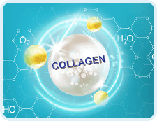
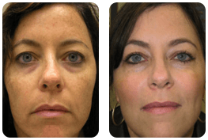
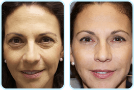
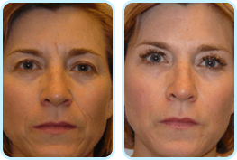

INTENSKIN
intensif
Une peau parfaite après le premier cycle d'utilisation
-
Rides
lissées
-
Rend
l'élasticité
-
Effet
lifting
Réduction
-50%
sur la première commande
-
Un cocktail
vitaminé
pour votre peau
-
Hydration
durant 48 heures
-
Teint
lisse
-
Lisse
les ridures mimiques
et les rides profondes
-
Stimule
la régénération
de la peau
Les principaux problèmes de la peau après l'âge de 30
-
Perte de fermeté, peau fripéechez 88% des femmes
-
Pores larges et
peau irritée
chez 83% des femmes -
Premières rides profondeschez 71% des femmes
-
Teint inégalchez 44% des femmes
Un effet visible
dans quelques
jours !
INTENSKIN
Une percée dans le rajeunissement
-
La crème INTENSKIN a une texture légère qui la distingue des autres produits similaires. Faites-vous un cadeau - le luxe d'un soin délicat qui répare la peau !
-
Grâce au léger parfum floral, le soin quotidien devient un rituel agréable.
Les causes du vieillissement de la peau
-
Déficit en oestrogène
Les oestrogènes font la peau lisse, tonique et le teint égal. Le taux de cette hormone diminue avec l'âge.
-
Stress et nervosité
Les bonnes et les mauvaises émotions laissent des traces sur le visage et, éventuellement, se transforment en rides.
-
Manque de collagène
Le collagène donne à votre peau la capacité de se remettre. Le déficit en collagène provoque le teint terne et la forme en V du visage.
-
Effet de l'environnement
Des substances nocives dans l'air et dans l'eau obstruent les pores et causent l'inflammation.
Le secret de l'efficacité
Effet complexe
INTENSKIN rend votre peau saine et ferme, élimine les rides et les imperfections.
-
Hydratation et nutritionLes vitamines et minéraux rendent à la peau son éclat naturel. Le teint devient sain grâce à une hydratation régulière.
-
LissageLes substances proactives éliminent les rides sur le visage et autour des yeux. La peau devient lisse, le visage revient à sa forme naturelle en V.
-
ProtectionLes substances proactives et les filtres solaires protègent la peau contre l'effet non désirable de l'environnement. Il ne reste plus aucune chance aux rides ni au teint terne.
INTENSKIN
la crème No 1 pour le rajeunissement de la peau
Avis de femmes réelles
-

- avant
- après
Annie, 37Une peau parfaite après le premier cycle d'utilisationJe n'avais pas de rides profondes mais plein de ridures mimiques et mon teint n'était pas idéal non plus. Avec la crème INTENSKIN les ridures ont disparu et le teint devenu tellement frais que je fais moins de trente ans maintenant. -

- avant
- après
Cécile, 39Une peau parfaite après le premier cycle d'utilisationJ'ai acheté INTENSKIN il y a pas longtemps et je suis déjà contente de l'effet - le visage tonifié, les rides réduites. De plus, les pores se sont reserrées. Je m'admire maintenant à chaque fois où je me trouve devant un miroir. Mais la chose la plus importante est que l'effet est visible au bout de deux jours. -

- avant
- après
Marie, 44Une peau parfaite après le premier cycle d'utilisationAprès l'âge de 40 ans, la peau n'est plus la même et je ne croyais pas qu'une crème puisse aider. Mais INTENSKIN marche vraiment - le visage a l'air tonifié, le teint n'est plus terne, les rides disparaissent. Je suis très contente.

Cosmétique
de cosmétologie
et de rajeunissement de la peaude solutions
novatricesRecommandé par les experts
Catherine Mathieu
cosmétologuerecommandent